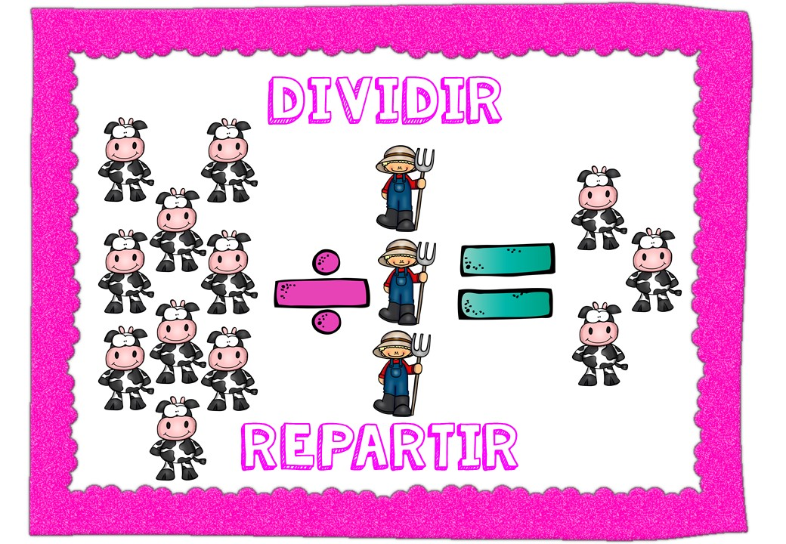

Fracciones
Las fracciones representan partes de un todo. Son fundamentales para entender proporciones y divisiones en matemáticas.

Las fracciones representan partes de un todo. Son fundamentales para entender proporciones y divisiones en matemáticas.
La operatoria básica incluye suma, resta, multiplicación y división, que son la base para resolver problemas matemáticos.
La geometría estudia las formas, sus propiedades y relaciones en el espacio, desde triángulos hasta figuras tridimensionales.